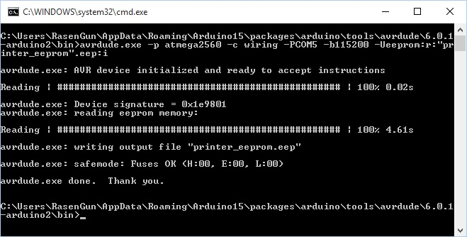
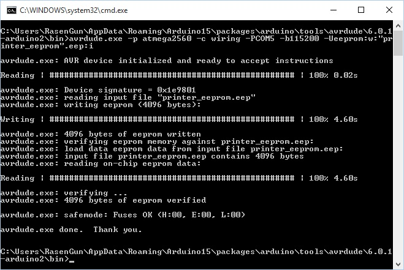

В прошлый раз, когда я писал свой "развёрнутый ответ на вопрос" о том, как забэкапить прошивку с "Меги" меня упрекнули, что я не упомянул про бэкап EEPROM. В тот раз я не сделал этого сознательно, т.к. справедливо рассудил, что не стоит всё усложнять на этапе первоначального "подхода к снаряду". Дело в том, что не для всех очевиден тот факт, что EEPROM не прошивается при компиляции и заливки прошивки из Arduino IDE. То есть, это означает, что абсолютно ничего в EEPROM не заливается, когда прошивка заливается из IDE. А манипуляции с EEPROM (если его использование вообще включено в прошивке) производятся абсолютно на другом уровне. И следовательно, для бэкапа голой прошивки без тонких настроек, которые ВОЗМОЖНО (только возможно) могут храниться в EEPROM, вполне было достаточно сохранить только голую прошивку. Но раз уж возник вопрос, то почему бы его не "разжевать". Давайте пройдёмся по порядку.
Что такое EEPROM и зачем вести о нём речь?
EEPROM - (Electrically Erasable Programmable Read-Only Memory) область энергонезависимой памяти микроконтроллера, в которую можно записать и прочитать информацию. Зачастую его используют для того, чтобы хранить настройки программы, которые могут меняться в процессе эксплуатации, и которые необходимо хранить при отключенном питании.
Пример использования EEPROM в 3D принтере
Рассмотрим на примере прошивки Marlin. В Marlin Firmware "из коробки" EEPROM не используется. Параметры конфигуратора (Configuration.h), которые включают возможность его использования, по умолчанию, закомментированы.
#define EEPROM_SETTINGS
#define EEPROM_CHITCHAT
Если включено использование EEPROM, то принтер может хранить и использовать следующие настройки (подсмотрено у буржуев):
Редактировать эти настройки можно, используя экран принтера и органы управления. При включенном использовании EEPROM, в меню должны отображаться пункты:
Так же, можно использовать GCode для работы напрямую (через Pronterface).
О EEPROM в Repitier firmware можно почитать здесь.
Как считать и записать данные в EEPROM?
Аналогично, описанному в статье про бэкап, методу бэкапа прошивки, используя ключ -U. Только в данном случае после него будет указатель на то, что считывать нужно EEPROM.
avrdude.exe -p atmega2560 -c wiring -PCOM5 -b115200 -Ueeprom:r:"printer_eeprom".eep:i
Этой командой производится чтение данных EEPROM'а в файл "printer_eeprom.eep". В случае успеха, на экране вы увидите примерно следующее.

Запись тоже не представляет из себя ничего сложного и выполняется аналогичной командой, которая отличается только тем, что в ключе -U стоит не "r", а "w".
avrdude.exe -p atmega2560 -c wiring -PCOM5 -b115200 -Ueeprom:w:"printer_eeprom".eep:i
В случае успеха, на экране вы увидите примерно следующее сообщение.

Как и зачем стирать EEPROM?
Для начала,- "зачем это делать?". Стирать EEPROM нужно в том случае, если предыдущая прошивка тоже его использовала, и в памяти мог остаться мусор. Где-то я уже натыкался на людей с проблемами, что после перехода с одной прошивки на другую (с Marlin на Repitier ЕМНИП), у них принтер начинал вести себя, скажем так, "творчески". Это связанно с тем, что разные прошивки хранят свои данные под разными адресами. И при попытке читать данные из неверного адреса начинается свистопляска.
Затереть EEPROM можно только программно из прошивки, но для этого придётся - на время залить в контроллер специальный скетч. Подробно об этом можно прочитать в официальной документации по Arduino.
Если же стирается EEPROM не в Arduino плате, а в каком-то абстрактном контроллере, то код скетча нужно будет изменить с учётом размера EEPROM в конкретном контроллере на плате. Для этого нужно будет поменять условие окончания в цикле "For". Например, для ATmega328, у которой 1kb памяти EEPROM, цикл будет выглядеть так:
for (int i = 0 ; i < 1024; i++) {...}
Вывод
Я довольно долго распинался, а всё для чего? Для того, чтобы подвести к заключению о том, что при бэкапе прошивки, EEPROM тоже можно сохранить, но только в том случае если вам нужны сохранённые в нём настройки. Если же вы готовы ими пожертвовать, то забейте на это. Так же, если вы меняете одну прошивку на другую, или переходите с версии не версию, не поленитесь очистить EEPROM перед заливкой новой прошивки. Ну и заодно мы узнали много нового.